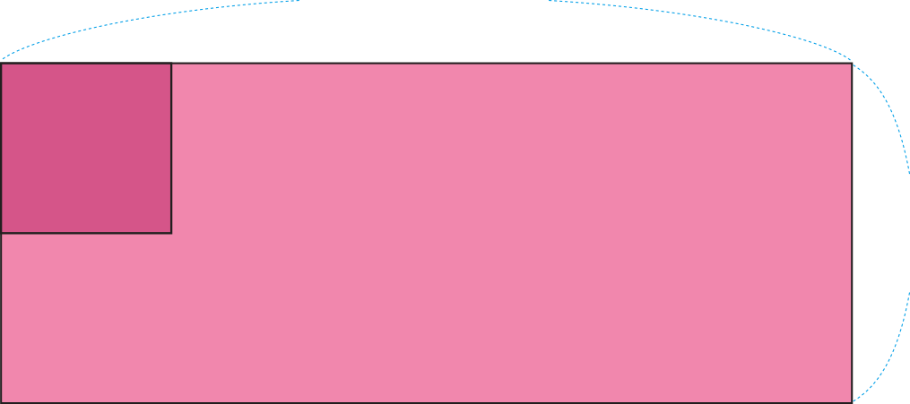

- 문제 1
- 문제 2
- 문제 3
- 문제 4
- 문제 5
-
안에 알맞은 수를 써넣으시오.
-
2 ㎡＝㎠20000
-
60000000 ㎡＝㎢60
-
-
넓이가 넓은 것부터 차례로 기호를 쓰시오.
-
가80 ㎡
-
나60000000 ㎠
-
다700 ㎡
,나,다가 -
-
직사각형의 넓이를 구하시오.
 1 ㎡ 500 ㎝ 2 m ㎡10 -
직사각형의 넓이가 42 ㎠이고 가로의 길이가 6 ㎝일 때 세로의 길이를 구하시오.
㎝7 -
넓이가 가장 넓은 도형의 순서대로 기호를 쓰시오.
 가8 ㎝ 3 ㎝
가8 ㎝ 3 ㎝ 나4 ㎝ 7 ㎝
나4 ㎝ 7 ㎝ 다5 ㎝ 5 ㎝,나,다가
다5 ㎝ 5 ㎝,나,다가